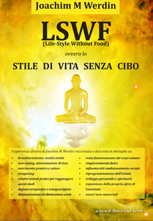

IL LIBRO IN ITALIANO
La più completa opera-manuale sul fenomeno del breatharianismo / inedia totale

L'esperienza diretta di Joachim M Werdin raccontata e descritta in dettaglio su:
| Titolo | "LSWF (Life Style Without Food) ovvero lo STILE DI VITA SENZA CIBO" |
|---|---|
| Autore | Joachim M Werdin |
| Titolo originale polacco | "Styl zycia Bez Jedzenia" |
| Titolo originale inglese | "Life Style Without Food" |
| Traduzione, note critiche e commenti | Marco Giai-Levra |
| Formato, dimensioni e pagine | A5, cm 148 x 210, pag. 216 |
| Rilegatura | brossura termica, copertina morbida |
| Editore-marchio | Marco Giai-Levra |
| Data di pubblicazione | Settembre 2012 |
| Edizione | prima |
| ISBN | 978-88-907655-0-6 |
| Prezzo | € 18,00 |
Il costo di spedizione è pari a € 1,80 e rimarrà invariato anche nel caso si decida di acquistare più copie del libro.
Copyright © 2012 Marco Giai-Levra.
Note di copyright della presente elaborazione di LSWF di Joachim M Werdin:
Prima edizione, anno 2012, traduzione e riadattamento dall'inglese all'italiano, redazione, note critiche,
note di traduzione, note di redazione, revisione, editing, impaginazione, grafica, copertina e layout a cura di
Marco Giai-Levra. Proprietà letteraria e tutti gli altri diritti riservati, copyright © 2012 Marco Giai-Levra.
Il contenuto e l'opera tradotti in italiano presentati su queste pagine sono soggetti alle normative sul diritto d'autore.
Pertanto la riproduzione, l'elaborazione, la diffusione e tutti gli altri utilizzi esclusi dal copyright richiedono
l'approvazione scritta del rispettivo autore o creatore dell'elaborazione. L'autore della presente elaborazione è
Marco Giai-Levra. La duplicazione di queste pagine non è permessa in nessuna forma.
www.facebook.com/groups/inedia/
Nota: I link a inedia.tk, inedia.net84.net, breatharian.info e inedia.info non sono più attivi e sono stati rimossi.